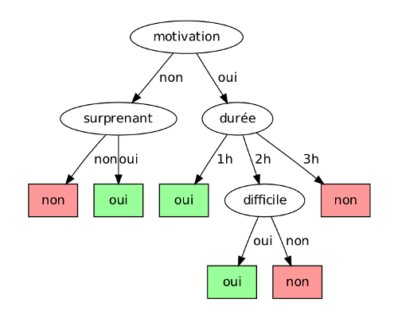

Decision trees are one of the major data structures in machine learning. Their
inner workings rely on heuristics which, while satisfying to our intuitions,
give remarkably good results in practice (notably when they are aggregated into
"random forests"). Their tree structure also makes them readable by human
beings, contrary to other "black box" approaches such as neural networks.
In this tutorial, we will see how decision trees work and provide a few
theoretical justifications along the way. We will also (briefly) talk about
their extension to random forests. To get started, you should already be
familiar with the general setting of supervised learning.
Training of a decision tree
A decision tree models a hierarchy of tests on the values of its input, which
are called attributes or features. At the end of these tests, the predictor
outputs a numerical value or chooses a label in a pre-defined set of options.
The former is called regression, the latter classification. For instance,
the following tree could be used to decide if a French student finds a lecture
interesting or not, i.e. classification in the binary set {oui, non}
(French booleans ;p), based on the boolean attributes {motivation,
surprenant, difficile} and a discrete attribute durée ∈ {1 h, 2
h, 3 h}. We could also have made the last one a continuous attribute, but we'll
come back to that.

The input to our decision is called an instance and consists of values for
each attribute. It is usually denoted by (x,y) where y is
the attribute the tree should learn to predict and x=(x1,…,xm) are the m other attributes. A decision tree is learned on a
collection of instances T={(x,y)} called the training set.
Example of training set for the decision tree above
| date |
motivation |
durée (h) |
difficile |
surprenant |
température (K) |
|---|
| 11/03 |
oui |
1 |
non |
oui |
271 |
| 14/04 |
oui |
4 |
oui |
oui |
293 |
| 03/01 |
non |
3 |
oui |
non |
297 |
| 25/12 |
oui |
2 |
oui |
non |
291 |
| ... |
... |
... |
... |
... |
... |
Given our observations T={(x,y)}, we now want to build a
decision tree that predicts y given new instances x. As of
today (2011) there are essentially two families of algorithms to do this:
Quinlan trees and CART trees. Both follow a divide-and-conquer
strategy that we can sum up, for discrete attributes, by the following
pseudocode:
1: DecisionTree(T: training set):
2: if "stop condition":
3: return leaf(T)
4: choose the "best" attribute i between 1 and m
5: for each value v of i:
6: T[v] = {(x, y) from T such that x_i = v}
7: t[v] = DecisionTree(T[v])
8: return node(i, {v: t[v]})
In what follows, we use uppercase T for training sets and lowercase
t for trees. A tree is either a leaf leaf(T), where we save a
subset T of the original training set, or a node node(i, {v:
t[v]}) that tests attribute i and has a child tree tv for
each potential value v of the attribute. The two statements with
quotation marks correspond to heuristics specific to each algorithm:
- Stop condition:
- The condition used to decide when it is time to produce an answer rather
than grow the tree to better fit the data. For instance, the condition
∣T∣=1 will produce detailed trees with excellent score on the
training set (for each instance (x,y)∈T the tree will
predict exactly y given x) but quite deep and not likely
to generalize well outside of this set due to overfitting.
- Best attribute:
- The goal of this heuristic is to evaluate locally what attribute yields the
"most information" on (or is the "most correlated" to) the result to
predict. We will see examples of such criteria below.
When learning a continuous attribute xi∈R, we adapt the
above pseudocode by selecting a split value v corresponding to a test
xi≤v. We will denote by node(i, v, t[≤], t[>]) the
corresponding node constructor. In the particular case where all attributes are
continuous, the resulting decision tree is a binary tree.
Regression
Let us consider first the case of regression, that is, when the value to
predict is a real number. Once our tree is built, regressing a new instance
x amounts to traversing a branch as follows:
1: Regress(x, t)
2: if t is a leaf(Tf):
3: return the average of y's in Tf
4: else if t is a node(i, v, t_left, t_right):
5: if x[i] <= v:
6: return Regress(x, t_left)
7: else (x[i] > v):
8: return Regress(x, t_right)
9: else (t is a node(i, {v -> t[v]})):
10: return Regress(x, t[x[i]])
This exploration ends up in a leaf f built on a training set
Tf, which we denoted in pseudocode as leaf(Tf). Let us define
Yf:={y∣∃(x,y)∈Tf}. The value predicted at the
end of the regression process is the average y of
Yf. The more the distribution of y∈Yf is concentrated
around y, the better the prediction will be. Equivalently,
the higher the dispersion of these values, the worse the prediction. CART trees
thus use the variance σ2 of Yf to measure
this dispersion and evaluate the "quality" of the leaf f.
Choosing a split attribute
CART also uses this variance criterion to choose the best split attribute at
line 4 of our DecisionTree(T) constructor. A given attribute i
yields a partition T=∪viTvi of the training set
T, where each subset Tvi has its own variance
V(Tvi). Variance after selecting i as split
attribute is then, for an instance (x,y) drawn uniformly at random
from T:
Vi=vi∑∣T∣∣Tvi∣V(Tvi)The attribute i∗ that minimizes this value is (heuristically)
considered as the best attribute. We will see in the next section how this
choice of minimizing variance is not only heuristic: it is also intrinsically
linked to minimizing a mean squared error.
Why minimize variance?
One of the main assumptions in machine learning is that instances (x,y) are drawn independently from the
same unknown probability distribution P. We can therefore see our
(x,y)∈T as realizations of i.i.d.
random variables X and Y (the two of them possibly
correlated). Similarly, leaf values y∈Yf are i.i.d. realizations
of the random variable Yf obtained by conditioning Y upon the
events {Xi≤ or >v} tested along the branch from
the root of our decision tree to the leaf f. With this in mind, we can
interpret y as an estimator for E(Yf). Its
mean squared error is then:
E[(Yf−y)2]=E[(Yf−E(Yf)+E(Yf)−y)2]=(y−E(Yf))2+E[(Yf−E(Yf))2]In this calculation, y and E(Yf) are
constants. The second term in the final sum is exactly the variance
σ2 of Yf, which CART trees estimate via
σ2. Minimizing σ for a leaf
f thus aims at minimizing this second term, but also the first one!
Since y is an arithmetic average
y=∣Yf∣1y∈Yf∑y=k1i=1∑kYf[i]of realizations of Yf (the random variable, not the set of
values—sorry for the overlapping notations), we have
ET(y)=E(Yf) and
VT(y)=σ2/n. Here the index T
means that expectations are taken over all possible training sets with fixed
size ∣T∣=n, with the size of the leaf set also fixed ∣Yf∣=k. Consequently, Markov's inequality yields:
P[(y−E(Yf))2>x]<kxσ2,which shows handwavingly how minimizing the variance σ will also
concentrate the distribution of y around
E(Yf), and thus reduce the first term in the mean squared
error of our estimator.
Classification
The logic for classification is similar to regression:
1: Classify(x, t)
2: if t is a leaf(Tf):
3: return the majority class in Tf
4: else if t is a node(i, v, t_left, t_right):
5: if x[i] <= v:
6: return Classify(x, t_left)
7: else (x[i] > v):
8: return Classify(x, t_right)
9: else (t is a node(i, {v -> t[v]})):
10: return Classify(x, t[x[i]])
If a majority of instances in Tf belong to the same class c∈{1,…,C}, then c is the best prediction we can make, and the
fraction ∣{(x,y)∈Tf∣y=c}∣/∣Tf∣ of instances in
Tf that belong to class c is an indicator of the "sureness" of
our prediction. When this ratio is roughly the same for all classes, predicting
the most frequent class in Tf still sounds reasonable, yet keeping in
mind that the quality of the prediction is low.
Measuring leaf homogeneity
These observations highlight how in classification a decision tree is all the
better when (the instances in) its leaves are homogeneous. We can then measure
the heterogeneity of a leaf the same way we measured variance for regression.
Let p1,…,pC denote the relative frequencies of classes
c∈{1,…,C} in Tf, and let c∗=argmaxipi denote the most frequent class. There are three main leaf heterogeneity
measures in the literature:
- Error rate:
- e(Tf):=1−pc∗, the classification error rate of our
algorithm over the training set.
- Gini criterion:
- e(Tf):=∑cpc(1−pc), which corresponds to the
classification error rate over the training set of a randomized algorithm
that would return class c with probability pc (rather than
deterministically returning c∗). This measure is used in CART
trees.
- Entropy:
- e(Tf):=−∑cpclogpc, which estimates the entropy of the class c from an
instance (x,c) drawn uniformly at random from Tf. This
measure is used in ID3 and C4.5 trees.
Choosing a split attribute
The leaf heterogeneity measure is also used to select the split attribute: if
an attribute i partitions T into T=∪viTvi, then every sub-tree Tvi has its own heterogeneity
e(Tvi). The error we expect from our prediction after branching to
the next sub-tree, for an instance drawn uniformly at random from T, is
accordingly:
ei=vi∑∣T∣∣Tvi∣e(Tvi)The attribute i∗=argminiei that minimizes this error is
(heuristically) considered as the best attribute, to be used at line 4 of our
DecisionTree(T) constructor.
Extensions
Decision trees as we described them have a number of limitations:
- The overall optimization problem is NP-complete for several optimality
criteria, which is why we
turned to heuristics.
- The learning procedure is static: trees are not designed to learn
incrementally from new instances that would continuously extend the training
set.
- They are sensitive to noise and have a tendency to overfit, that is, to
learn relationships between both data and noise present in the training set.
There are solutions to these problems that work directly on trees, notably
pruning (more details here and here).
In practice, it is often more convenient to go for one of the techniques that
follow, bagging and random forests, to alleviate overfitting while keeping the
implementation simple.
Bagging
The word bagging is an acronym for "bootstrap aggregating". It is a meta-algorithm that combines two techniques, guess which:
- Bootstrapping:
- a bootstrap of set T is another set obtained by drawing ∣T∣
times elements from T uniformly at random and putting them back.
Bootstrapping from a training set T yields a new set T′
that has on average 1−e−1≈63% unique instances from
T, when T is a big set.
- Aggregating:
- suppose we produce a sequence of bootstraps T1′,…,Tm′, and
we use each bootstrap Ti′ to train a predictor ti (for us
it will be a decision tree, although the technique could apply to any
family of predictors). Given an instance (x,y), we regress each
tree to obtain a set of predictions y1,…,ym, and
aggregate them into an arithmetic average y=∑iyi/m.
Bagging improves decision trees on several points: it smoothens out their
instability (where small perturbations in the training set can yield a
completely different tree due to the selection of a different early splitting
attribute), and makes predictions that are less sensitive to overfitting. The
price to pay is a loss in readability: bagged predictions are not the product
of a "reasoning", as was the case with a singular decision tree, rather a
consensus over several "reasonings" that potentially look at radically
different sets of attributes.
As of 2011, our theoretical understanding of bagging is still fairly limited: a
few arguments help us understand its impact and suggest conditions in which
they improve predictions, but we don't have a clear model in which we can
express and measure this impact.
Random forests
Proposed in 2002 by Leo Breiman and Adele Cutler, random forests
modify the DecisionTree(T) constructor to build trees that are better
suited to bagging. There are two main changes:
- Attribute sampling:
- Line 4 of our algorithm, rather than choosing i in the set of
available attributes A={1,…,m}, we draw a subset
A′⊂A of size ∣A′∣=m′≤m uniformly at random
(for regression, the authors suggest m′≈m/3) and choose our
heuristically best attribute i∗ in A′. The goal of this
step is to reduce the correlation between the several trees we train from
the same training set, e.g. avoiding that they all choose the same split
attribute at the root if one attribute turns out to seem consistenly better
than the others, allowing for "independent thought" in a fraction of the
trees that choose to ignore it at first. Intuitively, correlation means
consensus, and too strong of a consensus reaps off the benefits of bagging.
- Stop condition:
- Trees are grown as deep as possible, i.e., our stop condition happens as
late as possible (for instance ∣Tf∣<10 or ∣Yf∣=1)
within the limits of our computation power. Thus, our predictors try to
learn as much as possible from their data, their individual overfitting and
sensitivity to noise in the training set being compensated for later by
bagging.
For further details on random forests, see the manuscript by Breiman and
Cutler, or the The Elements of Statistical Learning: Data Mining, Inference,
and Prediction by Hastie
et al.
To go further
You can find the algorithms described above implemented in Python with SQLite
in the PyDTL library, which is
open source and distributed under the LGPLv3 license. It draws from both CART
and C4.5 trees and is geared toward growing random forests. Decision trees are
also implemented in other software such as milk (Python), Orange and Weka (Java).
Here comes the end of our introduction to decision tree learning. There are
likely many points to improve in it: feel free to write me if you have any
question or suggestion. For a deeper study of these techniques, and of
supervised learning in general, I highly recommend The Elements of Statistical
Learning: Data Mining, Inference, and Prediction by Hastie et al.
This tutorial is a translation of Une introduction aux arbres de décision, a note I wrote in 2011 after my internship at
INRIA with Marc Lelarge. Warm thanks to
Marc for supporting this work, for our discussions, and the cool topics we
worked on :-)
Discussion
Feel free to post a comment by e-mail using the form below. Your e-mail address will not be disclosed.